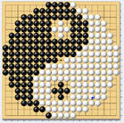

棋道
具者体也，棋者神也。
棋具乃棋道之体，棋道乃棋具之神。
神为本，体为行。
道通，体方能生神；道不通，体纵为精品，也只是顽石朽木而已，何足道哉？
五星子位乃棋道天象，千百年已成定制，取掉星子，若取掉天下方位一般。
然则若取掉星子，天地会更广阔。
棋手从第一子打好基础，若有星子在位，事先框定，也只有憨杀憨战。
世间百态天地万物，皆环环相围。
民被吏围，吏被官围，官被君围，君被国围。
国被天下围，天下被宇宙围。
宇宙被造物围，造物最终又被天地万物芸芸众生之精神围。
固之愈大，其势愈大。
势大国大，此为棋道，亦为天道人道也。
棋道圣手，以围地为目标，然必以取势为根基，方能成势。
棋无势，犹国无法度威势也。
圣手治棋，犹明君治国之道也。
圣手治棋，治国之道。
［ 蓝天蓝 于 2011-11-10 19:20:03 时花20金币送鲜花一朵］